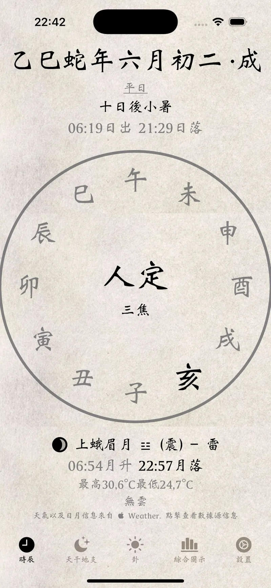
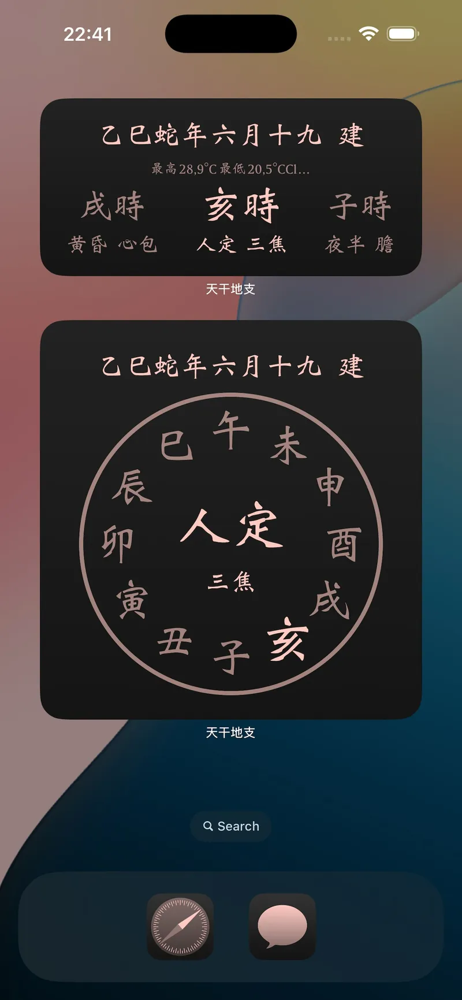
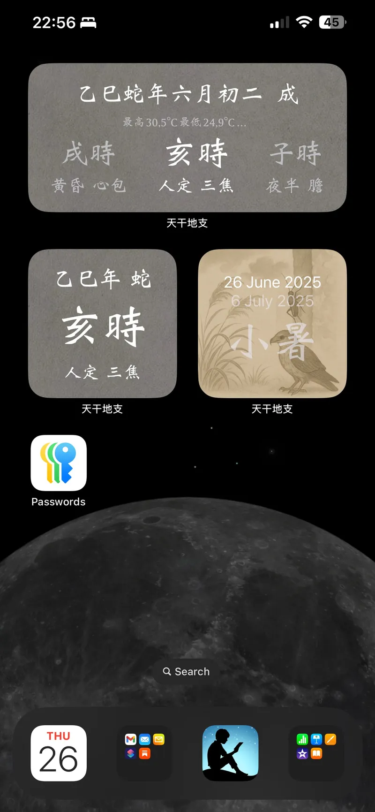
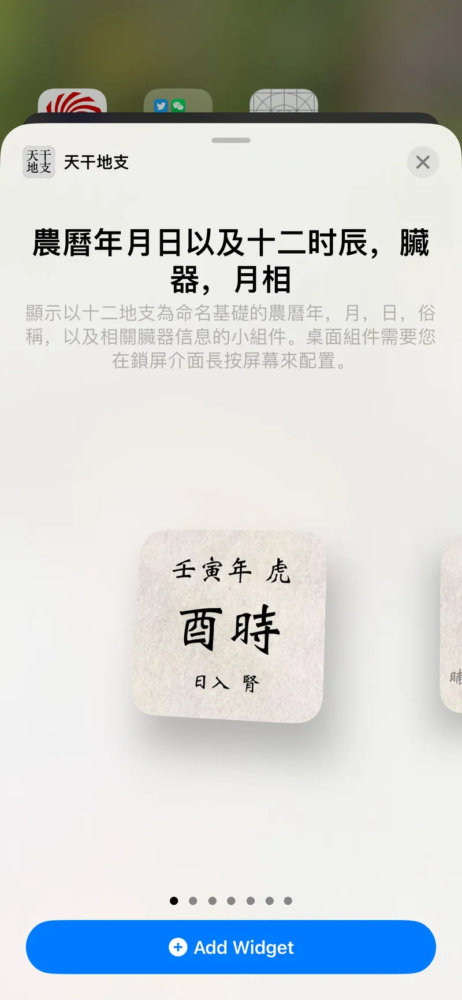

天干地支
Chinese Astrology & Calendar
Traditional Chinese timekeeping, astrology, and philosophy — across iPhone, iPad, Mac, and Apple Watch.
iPhone · iPad · Mac · Apple Watch




Features
Shichen Clock (時辰)
Real-time circular clock showing the 12 traditional two-hour periods, Ke quarter-hour subdivisions, and Live Activity support for your Lock Screen.
Chinese Calendar
Full lunar-solar conversion with Heavenly Stems and Earthly Branches (天干地支), the 60-year Sexagenary Cycle, and 24 Solar Terms with countdown.
I Ching & Bagua
Pre-Heaven and Post-Heaven Eight Trigrams, all 64 hexagrams with interpretations, and moon phase correlation with I Ching.
Traditional Medicine
Meridian Organ Clock (子午流注) showing which organ is active at each Shichen, Five Elements system, and acupuncture timing principles.
Moon & Weather
Sunrise, sunset, moonrise, moonset via Apple WeatherKit. Moon phase with traditional Chinese lunar phase names.
Traditional Music
Five Musical Notes (五音) with Tang Dynasty and Western equivalents. Twelve Pitch Scales (十二律呂) correlated with Earthly Branches.
Widgets & complications everywhere
Shichen, lunar date, solar term countdown, and more — on your Home Screen, Lock Screen, and Watch face.
- Home Screen widgets small · medium · large · XL
- Lock Screen widgets
- Apple Watch complications
- macOS menu bar
- Lunar New Year countdown
- Dynamic Island & Live Activity
One app. Every platform.
iPhone & iPad
Full-featured app with compact and regular size class layouts. Multiple widget sizes for every Home Screen configuration.
Mac
Menu bar extra showing current Shichen and date at a glance. Click to copy details for use anywhere.
Apple Watch
Dedicated watch app with circular Shichen clock. Multiple complication types and organ-meridian reference on your wrist.
Also inside
Reference for the rest of the traditional calendar and almanac.
- Bazi / Four Pillars (四柱八字) with Da Yun luck periods
- Twelve Gods (十二建除神) daily dos and don'ts
- Festival calendar with countdowns
- 12 Zodiac Animals & Five Elements
- 60 Nayin (六十納音)
- 28 Lunar Mansions (二十八宿)
- 12 Monthly Hexagrams
Customization
Adapt the app to your preference and region.
- Traditional or Simplified Chinese naming
- WeibeiTC calligraphy font
- Spring Festival red theme
- GMT+8 timezone for overseas users
Connect with thousands of years of wisdom.
iPhone, iPad, Mac, and Apple Watch. In English, Simplified Chinese and Traditional Chinese. Family Sharing supported.
Need help with TianganDizhi? Get support or email alexander.xiangyu.sun@gmail.com.